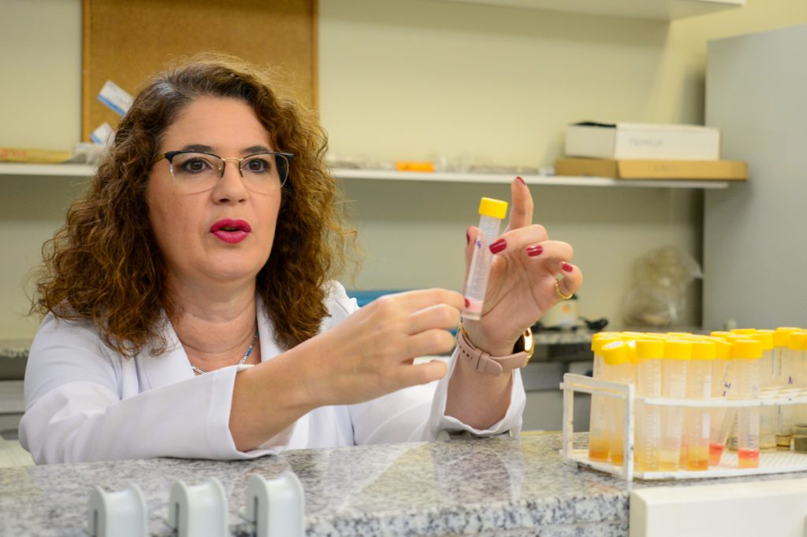

Desenvolvendo pesquisas por meio de técnicas biotecnológicas
O Laboratório de Bioloiga Molecular e Genômica (LBMG), da Universidade Federal do Rio Grande do Norte (UFRN), iniciou seus trabalhos em 1996 com a criação da base de pesquisa em Genéticas e Biologia Molecular. Em 2003, sob a coordenação das professoras Lucymara Fassarella Agnez-Lima e Silvia Regina Batistuzzo de Medeiros, foi inaugurado um novo laboratório, ampliando suas instalações. Estão vinculado ao Departamento de Biologia Celular e Genética, do Centro de Biociências da UFRN. O LBMG reune hoje cerca de 70 alunos da graduação, do mestrado e do doutorado.

Foto: Cícero Oliveira - Agecom/UFRN
Linhas de pesquisa
A atuação de docentes do LBMG nessa linha de pesquisa está ligada ao setor de petróleo, gás e energias renováveis, cujos projetos de pesquisa são voltados ao conhecimento (através de genômica e metagenômica) da microbiota associada a processos biogeoquímicos,
com vistas a identificar novos microrganismos e genes envolvidos com a degradação de hidrocarbonetos e produção de biossurfactantes, com potencial para o desenvolvimento de estratégias de recuperação avançada de petróleo e
biorremediação de áreas impactadas. Dispomos de bibliotecas metagenômicas e um banco de microrganismos isolados que podem ser prospectados para uma variedade de rotas metabólicas e enzimas com interesse comercial.
Nessa linha, docentes do LBMG desenvolvem pesquisas quanto aos mecanismos de mutagênese, reparo de DNA e câncer, investigando principalmente, mecanismos de citotoxicidade e genotoxicidade, interação entre proteínas e vias de reparo de DNA na correção
de lesões no DNA e em mecanismos de regulação da transcrição, e sua correlação com câncer e doenças neurodegenerativas, por meio de metodologias moleculares e bioinformática. Além disso, desenvolve pesquisa de prospecção de
mutações germinativas associadas a doenças raras e predisposição ao desenvolvimento de tumores. O laboratório presta serviço em diagnóstico e aconselhamento genético.
Nessa linha de pesquisa do LBMG desenvolvem pesquisas voltadas para a análise de genotoxicidade e mutagenidade, de diferentes produtos (água, material particulado, produtos naturais, biomateriais) fazendo uso de modelos procarióticos como o teste de Ames
e de diversos modelos eucarióticos, in vivo (piscíceo, tradescantia, Allium cepa, zebrafish e mucosa oral) e in vitro, acelulares e celulares empregando diversas linhagens celulares (A549, BEAS-2B, HepG2, CHO-k1, entre outras),
linfócitos ou ainda de células-tronco mesenquimais humanas. Os biomateriais testados são aqueles com enfase na osteogêse. Além disto, análises de expressão gênica, por métodos moleculares e de bioinformática, análises de senescência,
estresse oxidativo, também são realizadas, para a compreensão do mecanismo de ação dos produtos testados. Além disto, tem projetos também na busca de novos genes com potencial biotecnológico no genoma da C. violaceum.